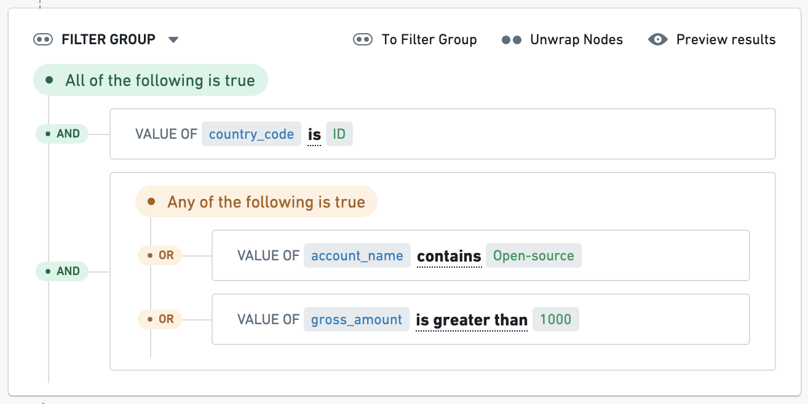

Foundry Rules
Foundry Rules (previously known as Taurus) enables users to actively manage complex business logic in Foundry with a point-and-click, low-code interface. With Foundry Rules, users can create rules and apply those rules to datasets, objects, and time series for a variety of use cases like alert generation or data categorization.
Foundry Rules comprises a set of components for creating, managing, and applying rules:
- A rule is a set of conditions that, taken together, can specify particular rows of data in a dataset.
- The conditions that form a rule apply to the columns of a dataset and can range from simple filters to complex aggregations, joins, or other operators.

The following pages describe several core concepts and provide instructions for how to deploy and customize Foundry Rules.
Example use cases
Foundry Rules can simplify the process of managing use cases that involve complex sets of rules, such as:
- Anti-Money Laundering (AML): Flag suspicious transactions through rules targeting both per-transaction and aggregated metrics.
- Equipment monitoring: Raise alerts for potential equipment degradation based on sensor data (e.g. when certain measurements reach specific values).
- Cohorting: Categorize entities into groups or "cohorts" based on rules. For example, creating groups of customers with particular features for better targeted marketing.